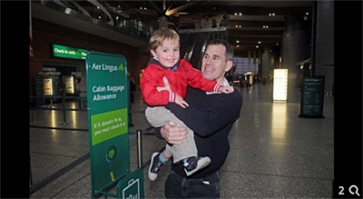

Sign of the times for deaf pupils left out in the cold
Irish Independent October 16th 2016

After the bodies of deaf brothers Daniel and William McCarthy were found in their West Dublin home earlier this month, groups highlighted "the devastating effects of social isolation" for the senior deaf community in Ireland. The Irish Deaf Society said that "social isolation for the deaf community can happen due to the lack of accessible services in Irish Sign Language."
On Wednesday, the Seanad will vote on the Recognition of Irish Sign Language (ISL) for the Deaf Community Bill 2016. A similar bill in January 2014, brought forward by Fianna Fáil Senator Mark Daly, was narrowly defeated.
Campaigners believe this is a watershed moment for how deaf people are treated in Ireland and are calling for equality and full recognition.
In Cork, Calum and Donnacha Geary are preparing to celebrate their eighth birthdays. The twins will share the moment as one... though nature has dictated that for one of the boys, the obstacles in his way are so much higher than for the other. Calum has had profound hearing difficulties since birth. His condition, known as Cochlear Nerve Aplasia (CNA), traditionally means a child is deaf and will have to rely on sign language to communicate.
Despite being the first Irish child to undergo the pioneering Auditory Brainstem Implant (ABI) procedure, at Manchester University Hospital in 2012, Calum still has the same hearing difficulties.
"The two boys sign to each other and they have two older brothers who can sign as well. Of course, we can communicate fine with Calum, he's our son and that's not a problem. It's what happens outside the home that's more of a concern for parents like Helen and I," explains Andrew Geary, who is campaigning for Irish sign language - crafted by deaf people in Ireland rather than being an adaptation of British sign language - to finally be recognised by the State.
ISL, in fact, more closely resembles French sign language than any other and the first dedicated deaf school in Ireland was the Claremont Institute, off Griffith Avenue in Dublin, which was opened in 1816 by Cork doctor Charles Orpen.
Fast-forward 200 years and the lack of official recognition of ISL became a huge problem for the Gearys once Calum started school.
"Communication in the classroom was so poor, he was falling behind from day one. The teachers did their very best and some up-skilled to learn some basic ISL but there was little fluency," explains Andrew, who's a garda sergeant in north Cork. The number of children in the country who require ISL in-class support on a permanent basis are limited to a few dozen, but still, access is so difficult for families to locate.
"One of the main problems is that ISL users who are proficient in the language face difficulties in becoming primary school teachers here because they need Irish (Gaeilge). As a result, we have a lack of deaf teachers who are fluent users of ISL - ultimately, this impacts children who use ISL to access the curriculum. Access to teacher education for deaf ISL users has to be opened up," explains Dr Elizabeth Mathews of Dublin City University's School of Inclusive and Special Education.
In total, there are around 5,000 deaf and hard-of-hearing ISL users in Ireland. Those campaigning for ISL to be recognised by the State argue this isn't a disability issue, as deaf ISL users consider themselves a cultural and linguistic minority.
Campaigners such as Dr John Bosco Conama, assistant professor at the Centre for Deaf Studies at Trinity College, is urging Senators to support the upcoming bill.
"It would be a long overdue recognition of the language which is so vital for deaf people across Ireland. It's hard to believe that in 2016, deaf children don't have the same right to a full education as others because their own native sign language is not available in the classroom," says Dr Conama.
"The consequences for young deaf people as they get older in Ireland can be serious and lead to frustration, poverty, unemployment, poor health and isolation. Many drop out of college and feel access to public services is very difficult."
Currently, there is no automatic right for deaf people to have an ISL interpreter (expect for in criminal court proceedings), which makes mundane tasks like visiting the doctor or local tax office an all but impossible task for many.
"In Finland, the State allows a voucher system where a deaf person can use their allowance to access an interpreter when needed. A similar system here would change people's lives for the better," he says.
Earlier this year, Andrew Geary travelled to Geneva as part of Ireland's Children's Rights Alliance delegation to the UN. On his return, he learned that funding had been provided so that Calum could have access to an ISL interpreter in his class at St Columba's Girls National School with Facility for Deaf Children in Douglas, Cork.
"His bridge is through a fluent ISL person and he's a bright boy who wants to learn," explains Andrew. "Our hope is that by the time Calum reaches college, or working age, the opportunities for profoundly deaf people in Ireland are so much greater than they are now. We have to keep working hard now, keep sprinting, to try and make sure that happens because Calum deserves to have the very same rights and opportunities as his twin brother Donnacha will have once he leaves school. It's a human right."
Previous
Next